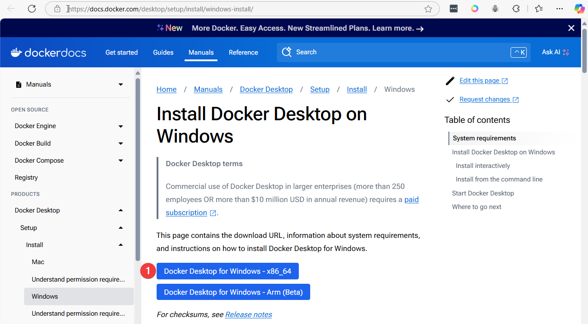

Section 3 Install Docker Desktop on Windows
How to Install Docker Desktop on Windows
Prerequisites
-
Supported Windows Version:
- Windows 10 64-bit: Pro, Enterprise, or Education (2004 or later).
- Windows 11: Home, Pro, or Enterprise.
-
System Requirements:
- WSL 2 (Windows Subsystem for Linux) feature enabled.
- Hardware virtualization enabled in the BIOS.
- Minimum of 4GB RAM.
-
Admin Rights:
- Administrator access is required for installation.
Steps to Install Docker Desktop
-
Download Docker Desktop:
- Visit the Docker Desktop Download Page and download the installer for Windows.
-
Run the Installer:
- Double-click the downloaded
.exefile. - Follow the installation wizard instructions.
- Double-click the downloaded
-
Enable WSL 2:
- During installation, ensure WSL 2 is selected as the default backend.
-
Restart Your System:
- After installation, restart your computer to finalize the setup.
-
Start Docker Desktop:
- Search for "Docker Desktop" in the Start menu and launch the application.
- Docker Desktop will initialize and verify system compatibility.
-
Sign In to Docker Hub:
- Optional: Sign in with your Docker Hub account or create a new one.
Step1: Enable WSL2
Open PowerShell as Administrator

This command will:
- install linux (ubuntu) on windows
Access to ubuntu: Search 'ubuntu"

Open Ubuntu Application: will open ubuntu shell

Run: update command
Step 2: Install Docker Desktop
1. Download Docker Desktop for windows

2 click installer


wait for install
3 Success screen, Click close

Step3: verify Docker is install correctly, open a terminal (Command promp or PowerShell)

4 Open Docker Desktop

Accept
Docker desktop

Enable Terminal


Ensure WSL2 install
we can use command below to list WSL install
> wsl --set-default-version 2
> wsl --list --verbose
NAME STATE VERSION
* Ubuntu Stopped 2
docker-desktop Stopped 2
- Version 2 indicated instance use WSL2 architecture, which includes a real linux kernel
- docker-desktop is installed in system
- state
Stopped mean WSL distribution not running
Start wsl instance
- Start Ubuntu install by command line
- Start docker-desktop wsl instance by start docker-destop application
- after start docker-desktop application, open terminal run
wsl --list --verbose - See State of WSL is running